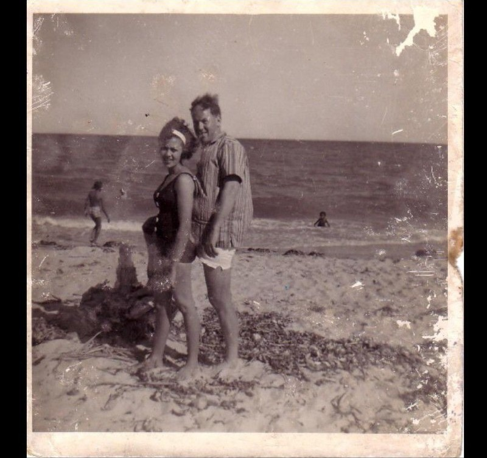

Four countries. Three empires. One family.
To study this family is to watch the deep currents of global policy reach into a private living room — and scatter a bloodline across three empires.
Their path winds through four countries — the Comoros Islands, Mozambique, South Africa, Portugal — and the shifting tectonics of the French, Portuguese and British empires. A father who owned freehold property and built a community was arrested as an "illegal immigrant" and deported, dying in exile. His eldest sons were barred from returning to their mother for decades, strangers to their own kin. A surviving twin, handed over in a moment of grief and poverty, grew up across the border unaware that her family existed at all.
But this is not a tally of tragedies. It is the story of an archipelago — individuals separated by vast oceans of policy and time, yet anchored to a shared identity by something the state could never stamp out. Just as islands are connected beneath the water by the same volcanic crust, the Ali family remained connected by shared values even when the surface of their lives appeared fractured.
Their legacy begins not in the townships of Johannesburg, but in the volcanic fires of the Indian Ocean. And it is told here by the last remaining child of that generation — the one who got out, who studied the pattern, and who means to hand it to his sons and his granddaughter.
Where the line begins: Comoros
The family's origins lie in the Mbadjé region of Ngazidja, the largest and youngest island of the Comoros archipelago. There, Mount Karthala rises more than 7,000 feet above the sea — a live volcano, and a physical reminder of the volatile ground on which the family first stood.
The Comorian world was a mosaic: Swahili, Arabic and Malagasy influences, shaped by centuries of spice and maritime trade. The language was a dialect of Swahili. The faith was Islam. And that single fact — language — would matter enormously, because it made the family not foreigners on the African mainland, but part of a deep cultural corridor running down the Swahili coast.
In the early twentieth century, the ancestors Ali Madimbamba and Amina Adarafina chose to leave the beautiful, isolated islands. They were driven by the universal push of limited island resources and the pull of the African mainland — a dream of a better future through the burgeoning trade networks of the coast.
Their departure was a short but momentous 188-mile crossing of the Mozambique Channel — a maritime highway that would eventually lead them deep into the heart of southern Africa.
Mozambique: the land of new beginnings
On the mainland, the family settled in Mozambique — and there, Muskien Muze Ali was born: the first of his line born into a legacy of mobility and determination, a child of the maritime crossroads.
Because Comorian is a branch of Swahili, the family moved through Mozambique with a natural linguistic bridge. They were part of the coast's deep culture — not strangers to be watched, but kin of a wider web. It is the same web that would one day carry the family's secret: a little girl, raised in Maputo, never told who she was.
But the pull of the Rand — the great gold economy of South Africa — proved irresistible. Muskien went south, chasing the fortune that had eluded his ancestors on the islands. He was young, ambitious, and walking straight into the most unequal economy on earth.
Gold, empire and the road south
Johannesburg in the 1930s and 1940s ran on gold — and gold ran on labour. The Witwatersrand Native Labour Association — Wenela — recruited men by the thousands from across southern Africa, from Mozambique, from Malawi, from as far as the coast, and fed them into the deepest mines on earth. The recruiter's promise was a fortune. The reality was a compound, a number, and a body that the rock could keep.
This is the machinery that swept Muskien Muze Ali south. He was a Comorian man in a Portuguese colony — already a subject of one empire — drawn by the pull of another country's gold. He arrived in South Africa in the 1930s or 40s, in the era of the Great Depression and a world sliding toward war.
He did not stay a miner's number. He built.
Muskien found his way to Sophiatown — the rare place where a black man could own land outright — and he owned it. He built a home, a family, a standing in the community. And in Sophiatown he met and married Alice Nel.
142 Good Street
Sophiatown was the intellectual and musical fire of black Johannesburg — the "Western Areas" that the authorities could not stand. Good Street was its sensory heart: the Street of Shebeens, a place of jazz and defiance. At number 39 steps stood Fatty Phyllis Peterson's shebeen. Nearby, the writer Can Themba held court at his "House of Truth." Writers, musicians, boxers, priests and gangsters all breathed the same smoky air.
The Ali family home was 142 Good Street — freehold. Owned. In a country where black families were being systematically denied the right to own the ground they stood on, Muskien Muze Ali stood on his own title deed.
And there, a confluence: the love story between Muskien and Alice Nel — a brilliant local woman, a polyglot who spoke five languages, a woman people simply loved. She was born on 5 September 1921 in Somerset East, in the Cape. Her marriage to a French citizen gave her a French passport — the document that would later become the family's most precious artifact: ALI-NEL, nationalité française, domicile: 142 Good Street.

Together they built a sanctuary between two pulling forces: the gold economy that had drawn him in, and the legislative clampdown that was coming — 1948's National Party victory, the Mixed Marriages and Immorality Acts that would make their very union a crime to the state.
For a brief time, the house on Good Street represented the freehold dream — the rare right for black families to own the land they lived on, to build community on their own terms, with their own neighbours: Africans, Indians, Coloureds, Chinese, Jews — the multi-cultural jumble that made Sophiatown itself.
The family that was twisted from the other side
Apartheid did not only rupture the Ali family physically. It twisted Alice's family — the Nels — psychologically.
The Nels were white in appearance. But the state classified them "coloured." The bitterness that grew in that household came from a terrible in-between: they could pass for white — and so they performed whiteness, desperately. "If you look white you can get privilege — as long as nobody asked proof."
The pressure to pass created a deep contempt for Alice's black husband. A boy in that family grew up feeling like an embarrassment for being black — and made his peace with it long ago, the way you make peace with a wound that finally healed. Alice's sister Julia — the sister Alice loved dearly — married a man the machine broke. He parked his car behind a convent and gassed himself to death; the family never recovered from finding him. Years later, a cousin and his girlfriend did the same, out of despair, in a car. "They had many tragedies."

Identity itself was the first casualty. The Ali family was physically scattered; the Nel family was internally hollowed. The same machine, two different wounds.
The family wants to know and heal — this is Hamede's voice, telling the Nels story with the tenderness it deserves.
The state builds the machine
The National Party won power in 1948 and set about dismantling black South Africa's right to exist in the cities. The Mixed Marriages Act and the Immorality Act criminalised the very love that had built 142 Good Street. The Group Areas Act carved the cities into racial zones. And in 1954 came the Natives Resettlement Act (No. 19 of 1954) — the legal hammer for the Western Areas removals.
The plan was old. Western Native Township had been founded in 1918–19; in 1933 Johannesburg declared itself white and some 43,000 Africans became "illegals" overnight; the municipality built only 600 houses, and 17,000 people chose freehold Sophiatown, Newclare and Martindale instead. The state never forgave the defiance.
On 10 February 1955, the removals began — trucks, police, families and furniture dumped at Meadowlands. By 1968, more than 22,500 families had been moved. Sophiatown's jazz and defiance were bulldozed into a whites-only suburb renamed Triomf — Triumph.
And in the township's own streets, a darker machinery turned: the bangalalas — the Civic Guards, "those who do not sleep" — fought the "Russians" gang in 1951–52. Thirty-one people died. Even Verwoerd called the township "more sinned against than sinning."
The Ali family was caught in the middle of all of it.
They didn't move the family. They moved the map.
When the removals came, the family did not go to Meadowlands like so many others. They moved from freehold Sophiatown to the municipal rental of 616 Kanyile Street, Western Native Township — a council house at R5.00 a month.
The state cleared the Western Areas "in sections." Their section survived — through the 1955 evictions, through the 1960s, through everything. Around 1974, the family moved again, a kilometre from Kanyile Street, into the new Westbury Flats — third floor, built on the very ground of the old township.
Here is the irony that defines the family's geography: Westbury IS Western Native Township. The ground was re-zoned for Coloured residents under the Group Areas Act, renamed in 1973 — and the family, which had never left the ground, found the ground had been renamed around them.
They didn't move the family. They moved the map.
Faizel · Laura · the giving-away
In January 1964, Alice gave birth to twins. The boy, Faizel, died at seven months of meningitis. The girl, Laura, survived.
Alice was grieving, poor, with an unreliable husband. When Muskien's sister Abiba visited Johannesburg — shortly after Faizel's death — a secret arrangement was made: the baby would go to Maputo, to be raised by Abiba as her own child. The handover happened "without us knowing, only the adults." The children in the house did not know that the baby who left with Aunt Abiba was their sister.
The same year, Alice's French passport was renewed — 7 April 1964, at the French Consulate in Johannesburg, valid until 6 April 1967. Look at those dates: the passport brackets everything — Laura's birth, Faizel's death, the handover, and the deportation that would come before the passport expired.

The state's paperwork and the family's paperwork ran in parallel: one stamped in ink, the other in silence.
The deep current in the living room
The global economy was a character in the Ali home — most audibly in the Salazar broadcasts.
Muskien did not understand English well. So whenever the news came up on the radio, he would shout for his wife to come and interpret — any development in Portugal, any change in Mozambique, any shift in the political regime. The family joked about it — "what did they say, what did they say?" — but his anxiety was paramount.
Think about what that watching was. A man one empire would soon deport was sitting in a South African township, straining to hear news of António de Oliveira Salazar — dictator of Portugal since 1932, ruler of the empire that governed his homeland. The colonial wars had begun: Angola 1961, Mozambique 1964. Muskien understood that his own freedom, his sons' freedom, the reunification of his family — all of it depended on the collapse of a European power five thousand miles away.
Salazar's stroke came in September 1968. The empire began to die. And in 1975, Mozambique was free — and the brothers who had been locked out of South Africa by its policies were unlocked by the fall of an empire. Hamede's reading of his own family's history is precise:
The deportation, ≈1966/67
He was still in South Africa when Laura was born in January 1964. Soon after — approximately 1966/67 — Muskien Muze Ali was arrested as an "illegal immigrant" and deported to Mozambique.
Hamede, born in 1958, was eight or nine years old. In his own 2013 notes he wrote "about 8–10 years — the best I could do." The man who had been a lawful freehold owner on Good Street, the man who had built a home and a community, was to the state a foreign native — deportable by definition.
He never returned. He died in exile, in Maputo.
The father was not a favourite man to his son — the boy would later say the only thing his father taught him was not to be like him. But the pattern of what happened to him is not personal. It is structural. The gold economy had pulled him in; the identity machine stamped him out. And the passport page that recorded the family the state counted — that document — survives, as evidence of who they were.

Abdul and Unusse: locked in Maputo
Two of the family's sons were on the wrong side of the border when the machinery closed. Abdul, the eldest, and Younnis (Unusse) were with Aunt Abiba in Maputo, on 24 de Julho. When their father was deported, they were caught in the aftermath — the same policies that expelled the father barred the sons from returning to South Africa.
Think of that for a moment: a mother in Johannesburg, raising the younger children alone, while her two eldest sons lived in a city a few hundred kilometres away and could not come home. For decades. They grew up in Maputo, with Abiba — and, later, with the little girl Laura, the baby handed over in 1964.
They were freed by economics. Britain could no longer finance colonialism; Portugal's empire collapsed — the Carnation Revolution, 25 April 1974; Mozambique's independence, 25 June 1975. The borders opened. The brothers could move again.
But their father, who had watched the Portuguese news with such anxious attention, died in exile before he could see it.
Abdul married Gadija (Cadija), and the register was signed in Maputo. There is a photograph of that day, and it is the family in miniature: Gadija leaning over the table, pen in hand, signing; Abdul beside her in his suit, watching the document; and behind them, Alice — the mother — in a white blouse, the only white face in the room, present for her eldest son's wedding though the border had kept them apart for so long.

Dowling Street · Bosmont High · the scary misses
Hamede was born in 1958 — the passport records it: the state's own list of the children, one by one. He grew up at 616 Kanyile Street and, from around 1974, on the third floor of the Westbury Flats, a kilometre from Kanyile. He walked to Dowling Street Primary — the school next door to St Nicholas, the boarding school for delinquent boys — and later to Bosmont High School, where he graduated at seventeen, around 1975/76.
Bosmont was a walk away. The family had moved one street north of Kanyile at some point in those years — Kambula Street — before the flats. The geography of his boyhood was tight: school, home, the streets between, all inside the renamed ground of the old township.
After school, there was no job waiting. Unemployed black youth were a problem the state policed directly — young men chased through the streets, stopped, searched, asked why they were not somewhere else. "I had some scary misses."
And around him, the texture of the in-between: the violence, the funerals, the desensitization that was the whole point of the place. The boy watched it, and he made a decision the place never intended — he would not become numb. He would get out.
Violence as background, not spectacle
The violence of the Western Native Township was not the story of the family — it was the background against which the story had to be lived. It is told here as texture, never as spectacle, because that is how it was: always present, never the point.
In the 1950s, the bangalalas — the Civic Guards, "those who do not sleep" — fought the "Russians" gang through these streets. Thirty-one people died in the violence of 1951–52. Don Mattera, the poet, was born in the Township in 1935 and led the Vultures as a young man before he turned to words. The names changed over the decades; the rhythm did not.
By the 1970s, the violence had its own calendar: the weekend funeral. Hamede watched friends die — Mike, Charlotte — "too many." The funeral was the social event, the free food, the entertainment. The place was engineered to make a young man stop feeling.
In 1976, the uprising that began in Soweto on 16 June spilled into the Township — students marching against Afrikaans as the medium of instruction, police opening fire on children, the anger spreading to every corner of the country. The boy from Westbury Flats saw his generation stand up.
And still he refused the numb. It is the single most important fact of this part of the story: desensitization was the goal of the environment, and he refused it. That refusal is what carried him out.
Georgie Jones & Phillip Winnaar
"It would be a grave error to mention my past without mentioning Georgie."
Georgie Jones lived at 616 Kanyile Street — the neighbour, the friend from the very beginning. He is still alive, still in contact, still a great friend. Hamede is one year older than Georgie, and the two of them went through everything together.
Hamede once watched Georgie get stabbed, in front of him, in the street. He rushed him to hospital. Georgie survived. That is the texture of a friendship forged in the in-between: the same streets that took so many friends did not take him.
And then there was Phillip Winnaar — part of the crew, and the man who would stand beside Hamede at his wedding. Phillip's own story was a redemption arc written in the open: he was a gangster in South Africa, ran with the violence of the township, went to prison. And he came out changed — drawn to Jehovah's Witnesses, and to the truth Hamede himself would find.
Phillip's story was told in his own words in Awake! magazine (July 2011, p. 25): "Philip was a gangster in South Africa... Jehovah saw something good in me and drew me to his people, this wonderful brotherhood."
From Ennerdale, Hamede wrote Phillip a letter about the truth he had found — and forgot about it. Years later, Phillip told him: "That letter you wrote me made a big impact in my life." A forgotten letter changed a life. The two men preached together in Klipspruit, where former gangsters greeted Phillip with respect; Hamede helped build the Kingdom Hall in Ennerdale — "this is where I got the truth."

When Phillip died, Hamede was asked to say a few words at the funeral. He stood up and gave what he calls simply "this is it" — the eulogy of a life never lived in vain. Its spine was the Elijah mantra, from 1 Kings 19:9, 10 — the question put to the prophet in his darkest hour: "What is your business here, Elijah?" For Phillip, the answer was always the same: his life was never in vain; he was never alone; he was never scared of defending truth and principle.
Phillip leaves his wife Carol; his children Brandon and Angelique; a sister, Morgan, of the Newclare congregation. The best man who once stood beside Hamede now stands as the story's proof: the same environment that desensitized so many could not hold everyone. Some got out — in body, in faith, or both.
The wound under the story
Rashid — Sulayman's full passport name reads "Sullymanl," 15 October 1949 — was Hamede's role model. A great soccer player. One of the few black systems analysts in the computer industry under apartheid, working for a large pharmaceutical company and earning well. He broke barriers for a living.
"But he could not shake the bad habits."
Rashid was the first to be offered a house in Ennerdale — the waiting list was five or six years — but he turned it down: family, friends, the drinking. Hamede took his opportunity, and that decision would nearly tear the brothers apart (the story is told in the next chapter). They did not speak for three years. They reconciled when Hamede moved into his own house a few streets away — "great friends" again.
At thirty-three, Rashid died in a head-on collision at two in the morning, driving home drunk.
The shock of it — and the grief — was one more reason Hamede had to get out of Johannesburg. Rashid is remembered here with love, not judgment: a barrier-breaker who lost his private fight. His son — the little boy in Aboobaker's arms in the wedding-party photograph — grew up fatherless.
Twenty-one years old · Ann Elizabeth
At twenty-one — around 1979 — Hamede married Ann Elizabeth. The black-and-white wedding photograph shows the groom, the bride, and the mother on the far right: the same ALI-NEL from the French passport, present at her son's wedding.
The wedding party photograph shows eight men in suits and a child on the lawn outside a brick building. On the far left: Rashid — the reconciled brother, present in the good years before his death. In the middle, kneeling, holding the child: Aboobaker — the younger brother, the one born in 1960, the last of the passport's list. The child in his arms is Rashid's son. On the far right: the groom himself.
And among the close friends who stood with him that day — third from the left, with the biggest afro in the row: the best man himself, Phillip Winnaar.

Marriage at twenty-one was the beginning of the getting out. A man with a wife and, soon, sons, could no longer live in the rhythm of the in-between. He had somewhere to go — and someone to take with him.
"It wasn't a clean movie."
To escape the gangsters, Hamede moved to Ennerdale — about forty-five kilometres from the Western Native Township — and bought his first house. But the story of how he got it is bittersweet, and it is best told in his own voice.
Before Ennerdale, there was a stop on the third floor of the Westbury Flats, where Hamede, Ann and baby Warren stayed with his mother. She took care of her grandson there — the grandmother who had held the family together through the deportation and the removals now holding the next generation. Then came the house in Ennerdale.
Rashid had been offered the house first — the waiting list was five or six years — but he did not want it. So Hamede took his brother's opportunity. A year in, Rashid visited with his wife. Jealousy. A massive argument. "Almost at blows." Their mother intervened — the peacemaker, as always.
Hamede moved back to Rashid's flat so his brother could take the house. A year later, "after pulling some strings," he got his own place — "really an amazing place to have your own house." He made improvements, and when he eventually came to Cape Town he came with sizeable savings, and bought where he wanted.
"It wasn't a clean movie."
But the pattern held: every decision was aimed at a better chance — for the children who would come, for the life that would be built away from the in-between.
The year Mandela walked free, Hamede walked out
In 1990, Hamede transferred to Cape Town — at his own request — working for Mobil Oil. It was the year Nelson Mandela walked out of Victor Verster prison. The irony of the calendar is precise: the country was opening its cages at the very moment the last of the Ali children walked out of Johannesburg for good.
The career that began with Mobil would become a lifetime's work in people development — at Engen from 1980 to 2003, where the Shared Values Process he championed became a case study at Wits Business School; and then at his own firm, Avontade, teaching organizations to build high-trust cultures. The boy from the renamed ground built a career out of telling institutions that their people were the point.
Cape Town is where he raised his sons — Ryan Jared and Warren Ansley — and where the decisions he made all along finally paid out: a different city, a different life, a different inheritance.
The green-eyed girl among the black faces
The fracture began to heal with a photograph.
On his first visit to his eldest brother Abdul in Maputo, Abdul took Hamede to meet Aunt Abiba. And Abiba showed him a picture of a little girl — "exactly like my mother, green eyes, white amongst all the black faces in Maputo."
The girl was Laura — the true last-born, the surviving twin, the baby handed over in 1964.
The very photograph from that day — the one where he saw his mother in his sister's face — is preserved in this book. It waits at Plate VIII, in the chapter that follows.
The 2013 family-tree document holds the same image: the father, Muskien Muze Ali, photographed with little Laura in Maputo — the man who knew her, the man who was her father, standing beside a child who never knew he was her father. And beside them, Abiba's photograph.

The photograph places them in Mafalala, the Maputo neighbourhood that produced presidents and poets — Samora Machel's birthplace, home of Chissano, and of Eusébio, the footballer. The caption notes, of one of the boys in the old photo: "3rd from left played soccer with Eusebio." The same streets that raised the greatest footballer of his generation also kept the family's secret.
Abiba gave Hamede Laura's details. But Laura had already left Maputo — with her ex-husband, for Portugal. The secret travelled with her across the sea. She was never told.
"Thanks for finding me, Mano — amo te."
Laura was born on 9 January 1964 — the surviving twin of Faizel, who died at seven months. She was raised by Abiba in Maputo as her adopted child, never told she had a family in South Africa. Her brothers Abdul and Unusse grew up in the same city, on a parallel timeline of silence; she knew them as cousins, not brothers.
Her name was Laura Ali-Dinis — a name with a secret folded inside it. Ali was her father's name, the surname she carried all her life and never knew was hers. Dinis was the husband of Abiba — the man who took her to Portugal when he left. The girl handed over in 1964 grew up as someone else's child, yet she was never not theirs: the Ali name travelled with her across the sea, unclaimed and unspoken.
When the pieces were finally put together — the passport, the photograph, the memory of the handover — Hamede reached his sister in Portugal. She has three children — Gani, Terno and Dinis, her only daughter. And her response to being found was not anger, and not grief. It was gratitude and love:


This is the collage Hamede built himself — piecing his discoveries together to prove the thesis: that Laura was his sister, that the family had been split and the secret carried across the sea. The documents confirmed what he had assembled. It is also a record for Laura's children — Gani, Terno, and Dinis, her only daughter — so they may know the full name their mother carried, and the island that was joined back to the archipelago.
Look at the two photographs together — little Laura with her father in Maputo, and grown Laura with the brother who found her — and you see the whole arc of the secret: hidden, carried, crossed an ocean, and finally told. Of the seven children of Muskien Muze Ali and Alice Nel, two remain: Hamede and Laura — and Laura's line continues in Gani, Terno and Dinis, in Portugal. The family tree now stands as a unified map — Comoros, Mozambique, South Africa, Portugal.
The lines on the television
In 1994, South Africa held its first democratic election. Hamede did not vote.
He watched the snaking lines on television — millions of people, most of them voting for the first time in their lives, many of them standing for hours in the sun for the simple right to mark a paper. He watched, and he did not join them.
It is a fact that some readers will find strange. It deserves to be told plainly, without apology, because it is the key to the man: the same faith that redeemed Phillip, that gave Hamede a family and a purpose when the blood family was scattered, is the faith that governs his citizenship. His hope was never placed in parliaments. He had watched empires rise and fall — French, Portuguese, British, Afrikaner — and he had come to a quieter conviction about where hope actually lives.
The witness of 1994: the state finally gave him the vote, and he declined it — not from bitterness, but from belonging to a different Kingdom. That is the spiritual spine of the whole story: when every earthly power failed the family, something else held them.
Not unique. Too common to ignore.
"My story is not unique — but too common to ignore the patterns."
Why tell all this? Because a single family's story, told honestly against the current of its times, is a specimen slide. Under the lens, eight patterns appear — and each one is a warning or a gift for the generations to come.
1 · Labour is pulled by economic gravity. Gold money pulled the father in — Wenela, the Rand, the great labour magnet. People follow the current before they ever see it.
2 · Empire's paperwork decides who belongs. Pass laws, "illegal immigrant," a French passport earned by marriage, a deportation order. Belonging is written — and can be un-written.
3 · Identity itself is the first casualty. The Nels looked white but were classified "coloured" — performing privilege, "racist wannabes," as long as nobody asked for proof. Siblings at the same station would not greet each other. "That is what apartheid did — it twisted and altered a person's identity."
4 · States redraw the map around people who stay still. W.N.T. → Westbury. The family never moved; the map moved. Freehold → rental → flats, all on the same ground.
5 · Empire's collapse frees some, strands others. Portugal went broke → the brothers were freed in 1975. The father died in exile from the same machinery. The same current that frees one strands another.
6 · Violence becomes the texture of the in-between. Weekend funerals as entertainment. Desensitization is the goal — and the danger. A place that sucks the life out of you.
7 · The ones who get out carry the memory. Hamede and Laura — the living line. Memory is what the survivors carry, and memory is what becomes the book.
8 · The one who reads the pattern early survives it. Hamede got out before the violence took him. The father couldn't read the forces — he was swept. Read the current before it reads you.
The displaced worker of his era
There was no reskilling for the father. The gold-and-empire order collapsed and he was swept out — a displaced worker of an economy he couldn't read. His son spent a career teaching people to see the next transformation coming.
The AI economy is now sweeping a generation the way gold-and-empire swept the father. The ones who survive will be the ones who learn to read the forces before the forces read them.
This story is not nostalgia. It is a pattern manual. The past is the lens; the future is the lesson.
The archipelago holds. Comoros to Mozambique to South Africa to Portugal — islands of one family, connected under the water by the same crust, now connected again on the surface. The story is told for the ones who come next: for Ryan and Warren, and for Sully — the granddaughter, so that she knows where she comes from.
To see the world as a character in your own story: you are not a passive observer of history. You are the result of deep currents. Understanding them is the first step toward navigating your own archipelago of resilience.